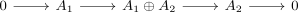

finite sum of artinian modules as artinian module
1. Proposition
 be a
be a  be
be 2. Proof
corollary of induction and artinian modules satisfy short exact 2 out of 3 for the split exact sequence

corollary of induction and artinian modules satisfy short exact 2 out of 3 for the split exact sequence
